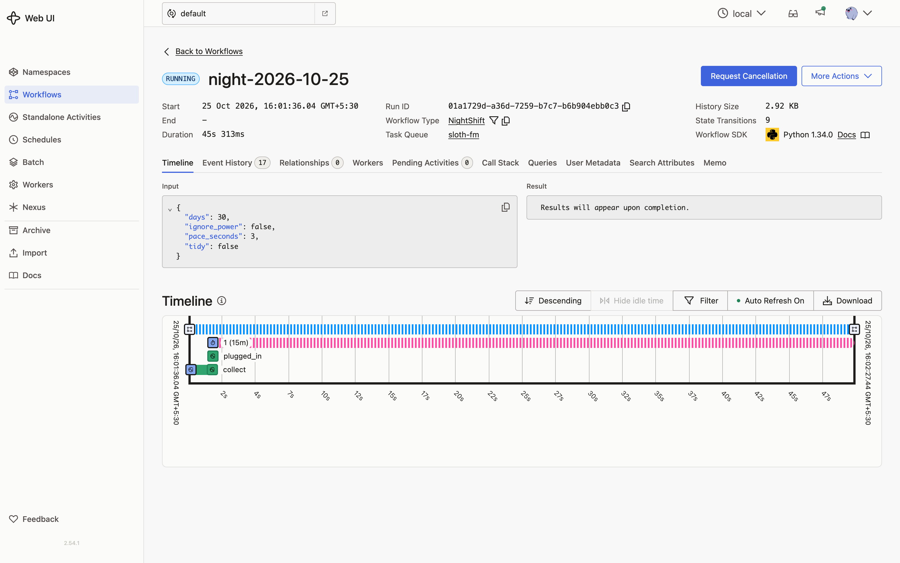

Waits for the charger
On battery it sets a durable timer and checks again every fifteen minutes. Plug in and it starts. Send wake if you want it to go now.
Your GitHub inbox, read overnight by a sloth on your own laptop.
While you sleep, Gemma 3 works through your GitHub notifications one at a time, right on your machine. In the morning an open-weight voice reads you a short radio show and leaves a page of links. No API keys, no cloud, no cost.
On air
A real episode, made from my own notifications on my own laptop. The voice is Kokoro, an open-weight model, running locally.
Transcript
Good morning. This is Sloth FM. While you slept, I read 76 GitHub notifications, slowly, on your own laptop, so you would not have to. 5 things need you today. First: You need to address the bug report regarding instrumentation spans leaking in the opentelemetry-go-compile-instrumentation repo. Next: You need to address a bug in the opentelemetry-go-compile-instrumentation repo regarding span leaks. Then: In opentelemetry-go-compile-instrumentation, you need to review and respond to this naming request. Also: You need to address the review request on the opentelemetry-go-compile-instrumentation repo. And: You need to review the draft issue for the opentelemetry-go-compile-instrumentation repo, you've been asked for feedback. 13 more are yours this week, but nobody is blocked on them. They are on your morning page. Some good news: 9 things went well. In opentelemetry-operator, your pull request was merged. In opentelemetry-go-compile-instrumentation, your pull request was merged. The other 49 were noise: 28 CI runs that need nothing from you, 16 threads you were only following, 5 releases from repositories you watch. You can ignore them. Rest is not wasted time; it’s the quiet foundation for a deliberate life. That is all. Go back to sleep for five more minutes. You have earned it.
How it works
The model only sees what a person would have to think about, and it never writes a number. A Temporal workflow holds the whole night together, so nothing is lost if the laptop sleeps.
Your recent GitHub notifications, fetched with the GitHub CLI you already use.
inputEvery thread is written down first, so the night always knows where it got to.
on diskPassed CI, releases you only watch, merged PRs, older runs on the same branch, PRs waiting on maintainers.
codeNeeds you today, yours this week, good news, or noise. A reason and one spoken sentence each.
local modelEvery count in the show comes from the journal, so nothing is ever made up.
codeA short radio show and a morning page with a link for everything.
local voicewake signal to start anywayprogress query to check inSlow on purpose
There is no rush overnight. Sloth FM is built to be gentle on your laptop and impossible to knock off course.
On battery it sets a durable timer and checks again every fifteen minutes. Plug in and it starts. Send wake if you want it to go now.
A short pause after each one keeps the fans quiet and the laptop cool while you sleep.
Close the lid or kill the process. Temporal remembers, and the night carries on from the next notification.
Plain rules settle the sure things before the model is asked. Gemma only spends time where a person would have to think.
Private by default
Your notifications are read by a model on your own machine and spoken by a voice on your own machine. There is no account to make and nothing to pay for.
--public.gh CLI you already signed in to. Gemma, Kokoro and Temporal all run locally.--tidy and it marks the noise as read on GitHub. That is all it ever does on your behalf.Open models
Every part you need is free to download and runs on an ordinary laptop.
| Part | Model | Licence | Runs |
|---|---|---|---|
| Judgement | Gemma 3 4Bgemma3:4b |
Gemma Terms of Use | Locally, through Ollama |
| Voice | Kokoro 82Mbm_george |
Apache-2.0 | Locally, through kokoro-onnx |
| Durability | Temporal | MIT | Locally, temporal server start-dev |
Run it
$ python3 -m venv .venv && .venv/bin/pip install -r requirements.txt
$ ollama pull gemma3:4b
$ scripts/sloth.sh # starts Ollama and Temporal if needed, then waits for the charger
$ scripts/sloth.sh --now # or start right away
$ .venv/bin/python -m slothfm progress # how far did it get?
$ .venv/bin/python -m slothfm wake # on battery, but start anyway
$ .venv/bin/python -m slothfm morning # rebuild this morning's page and show
$ open ~/.slothfm/mornings/$(date +%F)/index.htmlYou will need macOS or Linux, Python 3.12 or newer, Ollama, the Temporal CLI, the GitHub CLI signed in with gh auth login, ffmpeg, and the Kokoro model files (kokoro-v1.0.onnx and voices-v1.0.bin) in ~/.slothfm/kokoro.
Add --tidy to mark the noise as read on GitHub.
Numbers from my own inbox
Counted by code from the journal, not by the model.
Seen in Temporal
